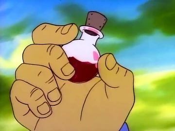

Gummiberry Juice

Recipe:
- add 6 handful of red berries
- then 4 orange berries
- 3 purple berries
- 4 blue berries
- 3 green berries
- and only one yellow berry
- The recipe ends with the three-step-stir: First stir slowly to the right, then stir slowly to the left, then bang the pot to banish the bubbles.